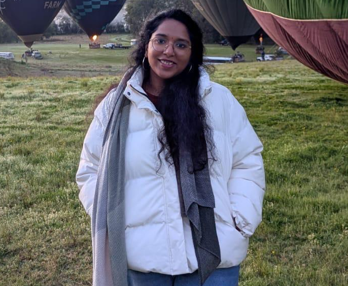

Manyam Manasa Aarthi
Front-End Engineer (React.js)
Contact Details

SUMMARY
- Front-End Engineer with 3 years experience building responsive, scalable React.js applications.
- Skilled in React Hooks, Context API, Material UI, and REST API integrations for robust interfaces.
- Experienced in designing and implementing web screens, ensuring alignment with UI/UX best practices.
- Strong collaborator in Agile teams, bridging design and development to deliver polished user experiences.